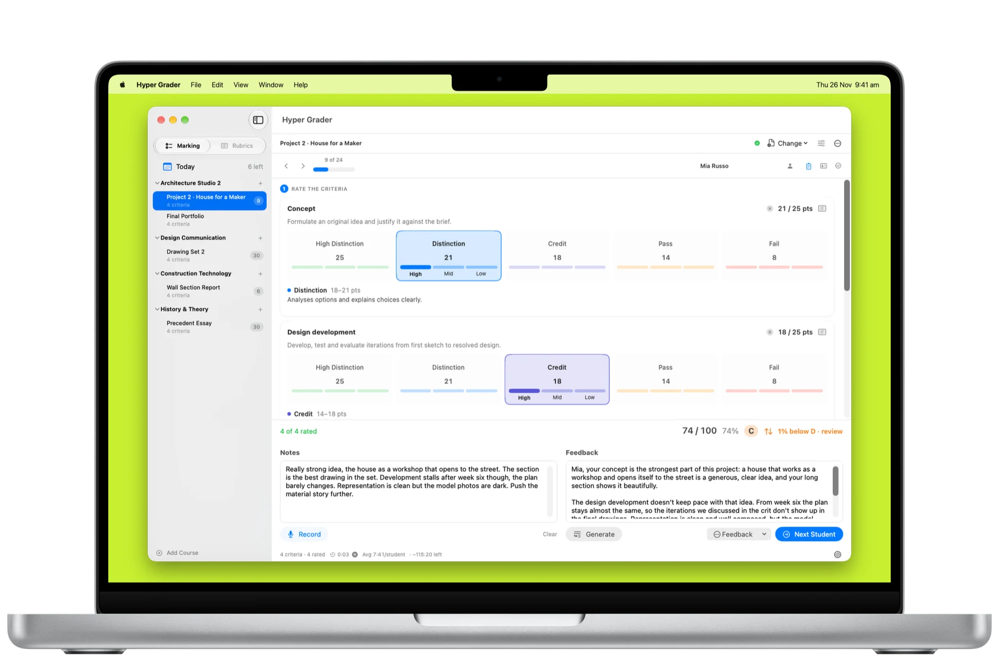

a marking app for Mac and iPad · in beta
say it, mark it, move on.
Rate each criterion, talk through what you see, and Hyper Grader writes the feedback in your words, right there on your Mac or iPad. When the class is done, marks and comments go back to Canvas in two file uploads.
why
marking shouldn’t decide what you set
Nearly a quarter of Australian secondary teachers spend ten or more hours a week marking. So we set work that’s quicker to mark. Hyper Grader makes marking fast enough that you can set the work you think is worth doing.
AITSL, Australian Teacher Workforce Survey, 2023: 24% of secondary and 11% of primary teachers mark for 10 or more hours a week.
speed
three seconds from your notes to feedback
Talk through the work while you look at it. Hyper Grader turns what you said into written feedback in about three seconds, on your own Mac.
time back on a class of 30
- 30 min1 minute saved a student Half an hour back on a class of 30.
- 1 h2 minutes saved a student An hour back on every class, about twelve hours over a semester.
- 2 h4 minutes saved a student Two hours back on every class.
Measured on a MacBook Pro with M5 Pro: a paragraph of about 85 words in 2.7 seconds, first words in 0.6 (median of 10). Older Macs take longer, and the first one after opening the app takes about 5 seconds.
your words
feedback that still sounds like you
Pasting student work into ChatGPT, or picking lines from a comment bank, gets you feedback that could be about anyone. The best critique comes from looking at the work and reacting to it. Hyper Grader keeps your reaction and tidies it up.
what you said
Okay, Hana. Um, the concept's really strong, like, a workshop that opens to the street. Love the section. Uh, development stalls after week six. The model photos are, ah, way too dark. Presentation's fine.
Right, Jack. Phones in schools. Um, your opening's got real bite, that bit about the lunch queue going dead quiet, love that. But then, uh, the middle sort of just... says it again? Paragraphs two and three are the same point. And um, there's no evidence anywhere, it's all vibes. Ending's fine.
Priya, titration prac. So, the method's really clear, I could actually redo this. Three trials, nice, and um, you flagged the one that was off. But the discussion, hmm, it says 'error' like five times and never says which error. Oh, and no units on the axes. Again.
Okay, Tom, Federation. Um, honestly, you know this stuff, the Barton material is great. But, uh, it's just telling me what happened. I got to the end and I still don't know what you think. Ah, and the referencing is all over the place, some footnotes, some not.
Mia, folio. Ooh. The charcoal studies are gorgeous, the hands especially. Um, but the final piece doesn't really use any of that? Feels like it came from somewhere else. And, ah, the annotations mostly just describe what's there. Yeah.
what Hana reads
Hana, your concept is the strongest part of this project: a house that opens itself to the street as a workshop, and your section shows it beautifully.
Development slows after week six, so the plan barely changes. Re-shoot the model in daylight so the timber reads, and show how the plan evolved. Those two changes would lift this into Distinction territory.
Jack, your opening grabs the reader, and the image of the lunch queue going quiet does a lot of work.
Paragraphs two and three make the same point, and neither has evidence behind it. Cut one, and back the other with a statistic or a quote from someone it affects.
Priya, your method is clear enough to repeat, and running three trials and flagging the outlier is exactly what a good prac does.
The discussion names error without saying which one, and the graph is missing units. Pick the biggest source of error, explain how it moved your result, and label both axes.
Tom, you clearly know this period, and your use of the Barton material is a highlight.
The essay retells events rather than arguing a position, and the referencing is inconsistent. State your argument in the first paragraph, make each paragraph prove part of it, and footnote every source the same way.
Mia, your charcoal studies are the strongest work here, the studies of hands in particular.
The final piece doesn't draw on them, so the folio doesn't show how you got there, and the annotations describe rather than reflect. Bring the hands into the final work, and use the annotations to say why you made each choice.
what good feedback needs
- what’s working Name the strength, so they keep doing it.
- specifics Point at the work itself, so they know exactly what you mean.
- what to fix Say plainly what isn’t working yet.
- next steps Turn “way too dark” into something they can do.
The ums go. You can edit every word before it goes anywhere.
how it works
the marking screen
Beside the grading screen of a typical learning system.


- pick a band Choose a grade band for each criterion, then High, Mid or Low within it. The arrow keys jump between bands, and your total and grade update as you go.
- say what you see Hit Record and talk while you look at the work. Dictation uses Apple's on-device speech recognition, so nothing you say is uploaded.
- check the line A total within 2% below the next grade gets flagged, so you can decide whether it should go up.
planning
stop putting it off
Hyper Grader breaks the pile into a number for today and keeps track while you work through it.
- a deadline for every class Marks are due fourteen days after students submit, or whenever you choose, spread over the working days left.
- today's number How many to mark today, most urgent first, and how long that should take at your pace.
- focus and breaks A pomodoro timer: 25 minutes of marking, then a 5-minute break, or lengths that suit you.
- your pace A timer for each student shows your average and how long the rest of the class will take.
- room to slip Take something off today's plan, or push its deadline when you've given an extension.
- small wins A note when you're halfway, down to the last five, and all marked.

rubrics · built on constructive alignment
the rubric builder
It starts where constructive alignment starts: with your course. Five steps take you from the task to a criterion-referenced rubric, with a guide beside each one that explains what makes it good and offers fixes as you go.
- 1task Type, level, weight and student hours, plus what students should be able to show.
- 2outcomes Paste the course objectives and learning outcomes from your course outline.
- 3alignment Map each criterion to the outcomes it assesses, and see each outcome's share of the marks.
- 4levels A descriptor for every grade band, High Distinction to Fail.
- 5review Coverage, Bloom's taxonomy and policy, checked before you mark.


before you mark a single piece of work
- Every learning outcome assessed here or in another task
- No outcome carrying more than half the marks
- A spread of Bloom's levels, so students create and evaluate rather than only remember
- A descriptor for every level, describing quality rather than quantity
- Course weight between 5 and 60%
- Three to six criteria
- Group work at no more than 30%, and hurdles flagged
- Student hours against the workload guideline
Canvas
mark here, upload there
No integration and no API token, so there's nothing for your school or uni to approve. It works with the files Canvas already exports and imports.
here

- file 1grades.csv
- file 2rubric assessments.csv
there

setting up from Canvas
Drop in your gradebook export, rubric and class list together. Hyper Grader sets up each assignment with its class, and tells you when you've picked the wrong file.

iPad · in beta
marking on iPad

Writing feedback and sending to Canvas stay on the Mac. Syncing the two is being built now.
on your device
student work stays on your Mac or iPad
- dictation Apple's on-device speech recognition.
- feedback Written by Apple's on-device model.
- student work Your notes and marks never leave the device.
- your own model Add a Claude API key if you like. Hyper Grader asks before anything is sent, swaps student names for placeholders, and lets you stop at any time.

other features
- student finder Search your class by name, open anyone's marking, or delete a record you no longer need.
- consistency check Read across a whole cohort's feedback for mismatched scores and tone.
- student profiles See each student's marks and feedback across assessments.
- your grade scale Standard Adelaide bands, or import your own marking scheme.
- keyboard first Next student with ⇧⌘↩, generate with ⌘↩, record with ⌘R.
- dark mode For marking after hours.
join the beta
Hyper Grader is in TestFlight for Mac and iPad, on macOS 26 and iPadOS 26 or later. It’s free while it’s in testing, and pricing will be announced at launch.
join on TestFlight questions? send me a note